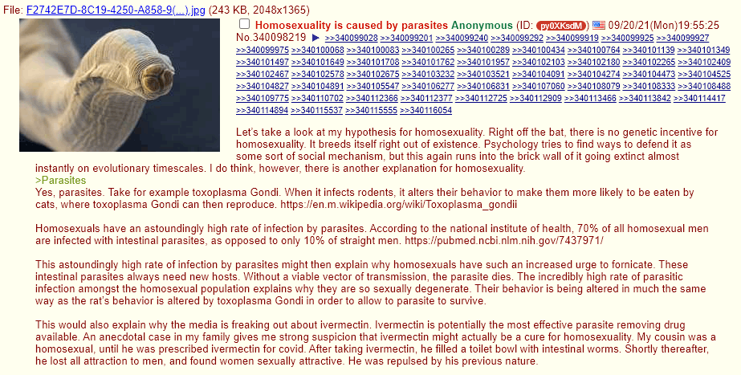

Saccharine Psycho-Virus: The Parasite Hypothesis For Male Homosexuality
Table of Contents
This article is available as both a webpage and a .pdf file download.
1. Introduction
Many authors have previously suggested that pathogens or parasites may be a possible cause of homosexuality, including Gregory Cochran in 20001, Steve Sailer in 20032, Peter Frost in 20093, Blithering Genius in 2016, and likely many others that I am unaware of. This theory became viral on September 20, 2021, when an anonymous user on 4chan’s pol posted a hypothesis4, which became informally known as the “worm pill”.
This essay is a comprehensive, yet succinct look at the worm pill with regard to the implications it has for specifically. Many cases of male homosexuality are likely caused by some kind of pathogen or parasite that lives in the colon and motivates the host to have anal intercourse so it can reproduce itself. As of now, I am reserving judgment on other speculative effects of parasite infection, those being motivation to engage in other forms of sexual degeneracy: transsexualism, bestiality, etc.
Note that female homosexuality likely has different causes from male homosexuality. The evidence for the parasite hypothesis doesn’t fit as well for female homosexuality, we know that there are some causes of male homosexuality that don’t apply to female homosexuals, and female same-sex-attraction is more continuously distributed along the Kinsey scale compared to male same-sex-attraction. Some biologists have speculated that female homosexuality is a by-product of genetic selection. In any case, female homosexuality is not the focus of this essay.
2. Evidence In Favor Of The Parasite Hypothesis
There are examples of similar phenomena that occur in the wild. A parasite called Sacculina infects a male crab by attaching to its genitals and giving it hormones to make it behave like a female crab. It then causes the male crab to nurse the Sacculina’s eggs. The parasite reproduces and the cycle continues. A more commonly known example is Toxoplasma Gondii. These parasites reproduce in the intestines of cats and lay eggs in the cat’s feces. They then spread to other intermediary hosts such as rodents. The parasite infects and modifies the behavior of rodents to make them attracted to cats, rather than fearful of them. The cat then eats the infected rodent, and Toxoplasma Gondii is able to reproduce again. These are well established examples of parasites exploiting another organism’s form for their own benefit.
Since homosexuals don’t reproduce, the condition is unlikely to be hereditary. If it were, then it would select against itself and be an evolutionary dead end. Instead, the condition is present in more than 1% of the male human population. This implies that most cases of homosexuality are caused by environmental factors, not genes.
Furthermore, most people are disgusted by homosexual intercourse and sexual promiscuity. This instinct (commonly labeled “homophobia”) is part of the immune system, and is usually reserved towards disease and infection vectors that humans have been exposed to for millennia, such as decaying organisms, insects, arachnids, fecal matter, etc. This natural instinct is so strong that cultures and religions have evolved explicit values and policies against homosexuality (e.g. Islam and Christianity). Similar religious policies include the banning of certain kinds of food, or unsafe preparation methods to limit the spread of disease. In homosexuals, the disgust response towards homosexual intercourse is gone, despite the high risk of catching a multitude of diseases that reside in fecal matter and may be transmitted via anal sex. Additionally, homosexual men tend to be more sexually promiscuous relative to normal people. They tend to have sex more often and with far more partners. These facts are consistent with the parasite hypothesis because an intestinal parasite would be able to spread itself to more hosts if its current hosts engage in frequent anal sex. These behavior patterns are also consistent with the disgust response in homosexuals being suppressed by something.
Pedophilia is another behavior that is more common among the homosexual population than the heterosexual population. “A study in the Journal of Sex Research found that although heterosexuals outnumber homosexuals by a ratio of at least 20 to 1, homosexual pedophiles commit about one-third of the total number of child sex offenses” (Dailey)5. This disparity fits the hypothesis, because it would be advantageous for parasites to infect their hosts as early as possible if they rely on psychologically modifying their hosts. The younger the host, the more plastic the brain will be. Parasites are thus motivated to cause their hosts to engage in sexual intercourse with young children and younger men.
2.1. Addressing Objections to the Parasite Hypothesis
But if the parasite transmits itself through anal intercourse, then why would it limit its host population to men? Women can receive anal intercourse too.
Women may be another vector of transmission, but male on male sex is still a more efficient channel of transmission overall, compared to transmitting male to female or female to female. Males tend to higher sex drives and they have phalluses that make it easier for newly infected hosts to spread the parasite to other hosts via anal intercourse. Males thus require less modification than females for becoming viable hosts to parasites.
Homosexuals who are attracted to minors are typically interested in teenagers, not prepubescent children.
This does not refute the parasite hypothesis because the adolescent brain is still developing and is more pliable than an adult one. Adolescent brains are also within the typical age range for when humans start to develop sexual attraction, so teenagers may have the most optimal brains for parasitic modification and re-wiring among all other potential hosts.
Are there ways for the parasite(s) to spread, besides anal intercourse?
It’s likely that the parasite can be transmitted in other ways besides anal sex, but more research would be needed to determine what other infection vectors may be viable.
3. Other Causes of Male Homosexuality
It is true that there are other documented and proposed causes of homosexuality. Homosexuality is known to be associated with abnormal prenatal hormone levels during crucial neurological development periods (Sheppard)6 and (Wilson)7.
Another cause is having multiple older brothers, which can cause an immune response or an allergic reaction in the womb that turns male fetuses homosexual. The mechanism is thought to be a maternal immune response to male fetuses, whereby antibodies neutralize male Y-proteins thought to play a role in sexual differentiation during development.8 Fraternal birth order is thought to cause homosexuality in at least one-sixth of all homosexual men.
Since we know that there are multiple causes of male homosexuality, we can separate homosexuals into two groups: 1. those who have been infected with parasites, and 2. those who have not. If a large fraction of homosexuals are not affected by the parasite, then future research could investigate the ratio of parasite-infected homosexuals who did pedophilia vs non-parasite-infected homosexuals who did pedophilia, and that could reveal more information about the strong correlation between homosexuality and pedophilia.
4. Final Thoughts
It’s possible that drugs that purge intestinal parasites such as ivermectin (“horse de-wormer”) could be used to remove such parasites and possibly reverse the psychological damage done to the host. There is anecdotal evidence that this has worked4, 9, 10. The degree to which someone can recover from the effects of the parasite should be determined by the rate of success for curing homosexuality and/or pedophilia, and the age at which victims can be cured of its influence. We recommend that the scientific community conduct more research to investigate the effects of parasite cleansers on curing homosexuality.10
In a more rational world, research on more unsettling causes and cures of homosexuality, gender dysphoria, and other similar sexual disorders would be well underway. Unfortunately, the scientific establishment won’t even remotely consider the parasitic hypothesis as a potential cause of homosexuality. There is a glut of ideological resistance to such an idea. Imagine how humiliating and terrifying it would be to realize that so much LGBTQ+ cultural activism and virtue-signaling was motivated by parasites. That the cure is a drug that just so happened to be recently smeared as “horse de-wormer”. That hundreds of thousands of lives have been ruined by homosexual lifestyles thanks to voluntary sterility and STDs, all for the sake of such a low form of life. On the other hand, our culture could double down on its foolishness, celebrate parasites, and give some multicultural excuse for how brave and wonderful the infected are. We should run experiments to test this hypothesis, if given the opportunity. If possible, curing homosexuality and other forms of sexual degeneracy will improve society by removing a vector of irrationality from the world.
Homosexuality being caused by tape worms would be the biggest twist in clown world history. Please be true. – anon
© 2022-2023 The Pragmatopian. All rights reserved.
5. Other Sources
Bering, J. (2011 March 9). Natural homophobes? evolutionary psychology and Antigay Attitudes. Scientific American Blog Network. Retrieved February 11, 2022, from https://blogs.scientificamerican.com/bering-in-mind/natural-homophobes-evolutionary-psychology-and-antigay-attitudes/.
Cochran, G. (2013 November 6). Depths of madness. West Hunter. Retrieved February 11, 2022, from https://westhunt.wordpress.com/2012/02/16/depths-of-madness/.
Freund, K., & Watson, R. J. (1992). The proportions of heterosexual and homosexual pedophiles among sex offenders against children: an exploratory study. Journal of sex & marital therapy, 18(1), 34–43. https://doi.org/10.1080/00926239208404356.
Keystone, J. S., et al. (1980 September 20). “Intestinal Parasitic Infections in Homosexual Men: Prevalence, Symptoms and Factors in Transmission.” Canadian Medical Association Journal, vol. 123, no. 6, pp. 512–514, https://pubmed.ncbi.nlm.nih.gov/7437971/. Accessed 10 Aug. 2023.
Footnotes:
Cochran, G.M., Ewald, P.W., & Cochran, K.D. (2000). Infectious causation of disease: an evolutionary perspective. Perspectives in Biology and Medicine, 43, 406-448. https://citeseerx.ist.psu.edu/viewdoc/download?doi=10.1.1.182.5521&rep=rep1&type=pdf
Sailer, Steve. (2003 August 17). “Gay Gene Or Gay Germ?”. VDare. https://vdare.com/articles/gay-gene-or-gay-germ.
Frost, Peter. (2009 February 19). “Origins of male homosexuality: the germ theory”. Evo and Proud. https://evoandproud.blogspot.com/2009/02/origins-of-male-homosexuality-germ.html.

Bickerton, Sean T, and Timothy J Dailey. (2002 June 29). “Pedophilia and Homosexuality.” The Washington Post, WP Company, https://www.washingtonpost.com/archive/opinions/2002/06/29/pedophilia-and-homosexuality/b385cfb3-8b58-449d-8af9-0cfdcd278978/?noredirect=on.
Sheppard, Simon. (1995 January). The Tyranny of Ambiguity: Homosexuality, The Heretical Press. Retrieved August 19, 2022, from https://www.heretical.com/sgs-2002/toa-s03x.html.
Wilson, Glenn. The Great Sex Divide, pp. 78-80. Peter Owen (London) 1989; Scott-Townsend (Washington D.C.) 1992. https://www.heretical.com/wilson/hbrain.html.
Balthazart, Jacques. (2018 January 9). “Fraternal birth order effect on sexual orientation explained”. Proceedings of the National Academy of Sciences of the United States of America. 115 (2): 234–236. https://www.ncbi.nlm.nih.gov/pmc/articles/PMC5777082.
“Turpentine Cured Me From Being Gay”. Youtube, uploaded by You Be You Free And Clear. 2016 November 13. https://www.youtube.com/watch?v=2mG7DbMQ_gM.
This is not medical advice. You should always consult a medical professional before trying anything that may adversely change your health or lifestyle. This includes anything that involves ingesting ivermectin, turpentine, or other parasite cleansers.